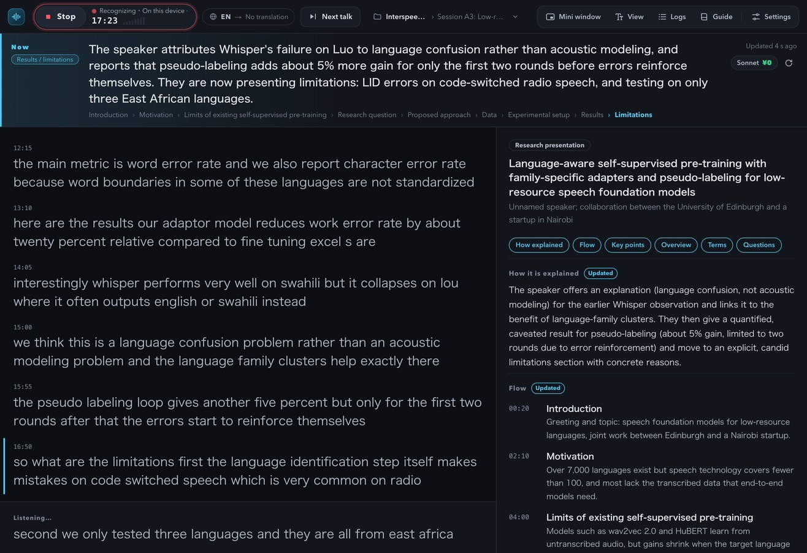
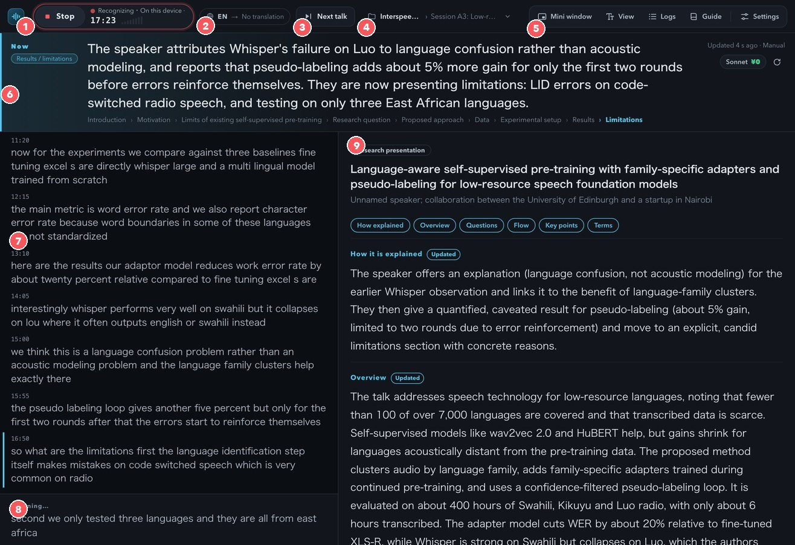
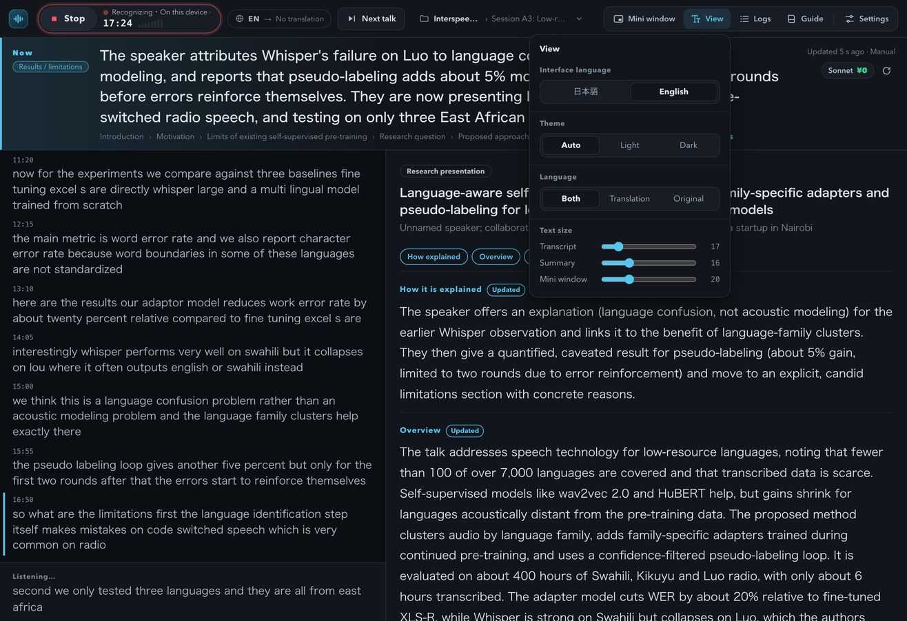
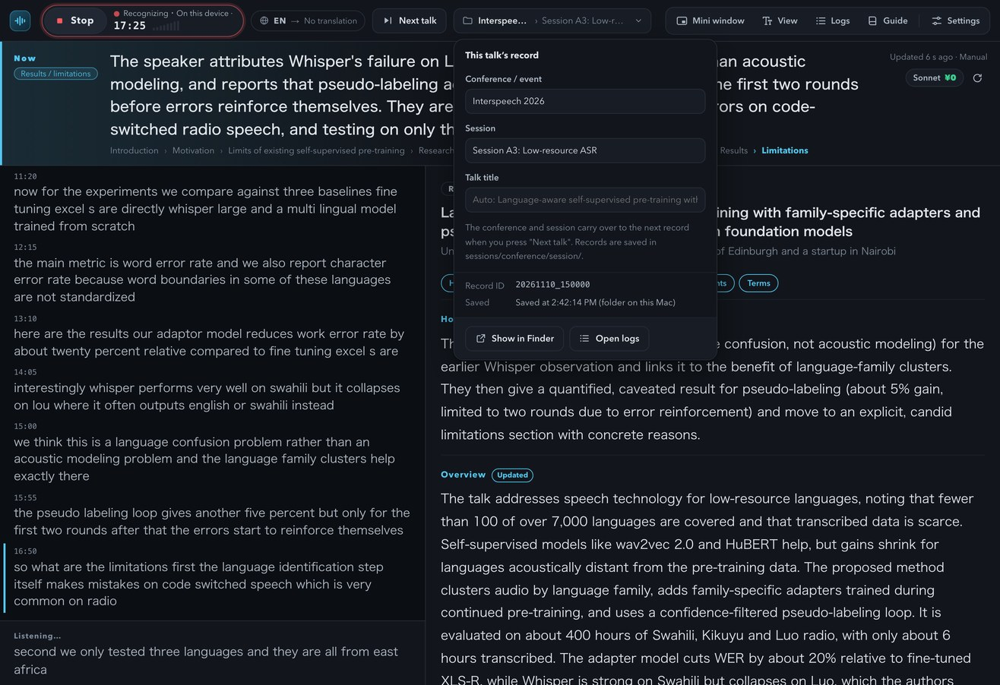
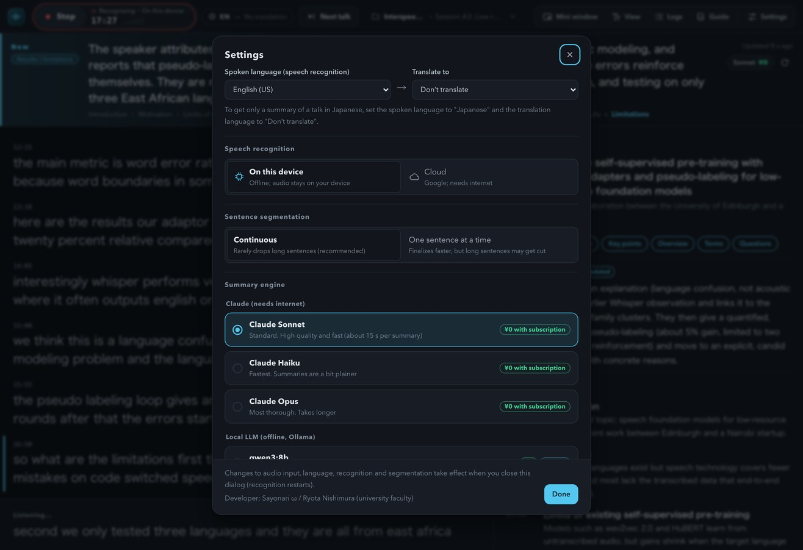
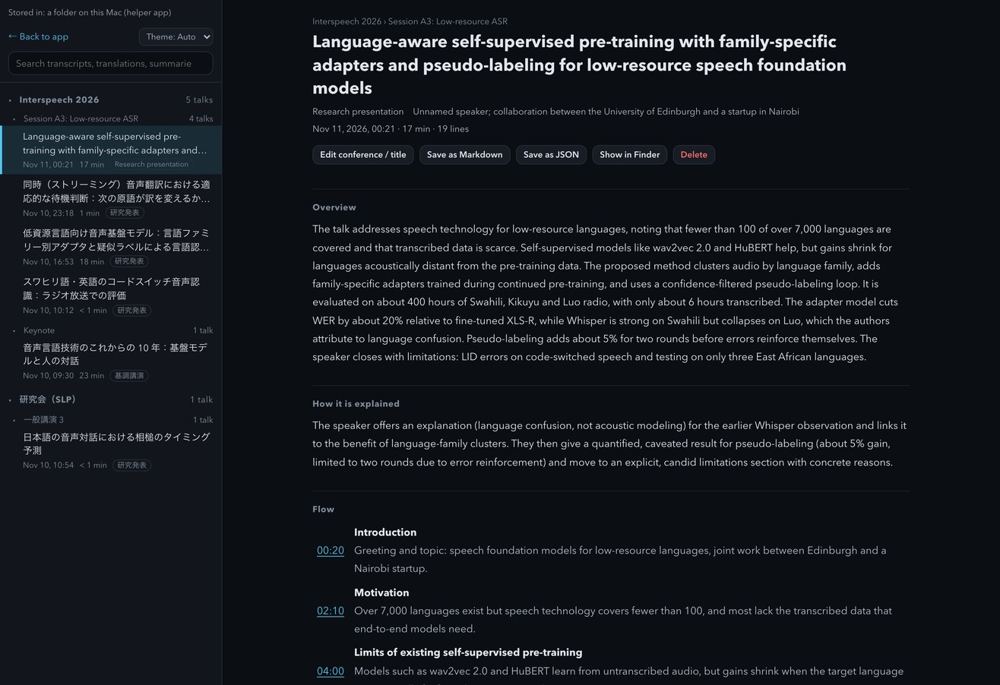

User Guide
Listen. Translate.
Summarize.
Tsuyaku Youyaku-chan is a web app that interprets and summarizes talks in real time. It applies speech recognition and translation to talks, conference presentations, and meetings as they happen, and summarizes what is being discussed right now.
Just open the page in desktop Google Chrome. There is nothing to install and no account to create.

Features
Speech recognition
Transcribes speech with the speech recognition built into Chrome. Supports more than 20 languages, including English, Japanese, Chinese, and Korean. With on-device recognition, your audio never leaves your computer.
Translation
Translates each finalized sentence with Chrome's built-in translation, and shows a first translation of the sentence still being spoken. You can also show the original text only.
Summarization
Every few tens of seconds, it refreshes what is being discussed now, what kind of talk it is, how it is explained, the flow, key points, terms, and suggested questions.
Records for conferences
Each talk is saved as its own record, organized as "Conference › Session." Use "Next talk" to switch talks without stopping recognition.
Zoom / Meet
Can also recognize the audio of a browser tab or screen. A floating mini window that stays on top shows the latest translation and the current topic.
Logs
Browse and run full-text search over past records, and reread the summaries and transcripts. Export to Markdown or JSON.
Getting started
- Open the app in desktop Google Chrome. It works on both Windows and Mac (use the latest version of Chrome).
- Press the red "Start" button. The first time, allow microphone access.
- Once someone starts speaking, the translation appears on the left, the current topic at the top, and the summary on the right. Press "Stop" to pause. Pressing "Start" again continues the record of the same talk.
The first time you use the app, Chrome automatically downloads the models for speech recognition, translation, and summarization (this can take a few minutes). Until the download finishes, speech recognition runs on Google's cloud.
The screen

- ① Start / Stop and status
- The red button starts and stops recognition. On the right you see the recognition status (on-device or cloud; microphone or tab audio), the elapsed time of this talk, and the input level.
- ② Language
- Shows the spoken language and the target language, for example "EN → JA." Click it to open the settings.
- ③ Next talk
- Closes the record of the current talk and starts the record of the next one. Recognition keeps running. If you press it by mistake, use "Undo" to go back.
- ④ Record destination
- The "Conference › Session" this talk is saved under. Click it to enter the conference name, session name, and talk title.
- ⑤ Mini window, View, Logs, Guide, Settings
- The mini window is a small window that stays on top. View sets the interface language, the theme (light or dark), and text size, and Logs lists past records.
- ⑥ Now
- Describes what is being said right now in about two sentences. The marker at the upper left shows the position in the overall talk (introduction, proposed method, experiments, and so on), and the row below shows the flow so far. At the upper right you see when the summary was last updated and which engine produced it (¥0 means no extra charge).
- ⑦ Transcript
- Large text is the translation and small text is the original. The line with a blue bar on its left is the most recent utterance. If new lines arrive while you are scrolled up, a "Latest" button appears.
- ⑧ In progress
- The sentence being spoken. Once it is finalized, it moves up into the transcript.
- ⑨ Summary
- Shows what kind of talk it is, how it is explained, the overview, questions to ask, the flow, key points, and terms, in that order. Items that have just been updated get an "Updated" marker.


Settings

- Audio input
- Choose "Microphone" to listen to a talk in the room with your computer's microphone. Choose "Tab / screen audio" for Meet, Zoom (browser version), and similar.
- Language
- Choose the spoken language and the target language. If a talk is in Japanese and you only want a summary, set the spoken language to Japanese and the target language to "No translation."
- Speech recognition
- "On-device" keeps your audio on your computer (and works offline). "Cloud" recognizes speech on Google's servers.
- Sentence segmentation
- "Continuous" is less likely to drop long sentences (recommended). "One sentence at a time" finalizes faster, but long sentences are more likely to be cut in the middle.
- Summarization engine
- Without installing anything, you can summarize with "Gemini Nano (Chrome's built-in AI)." With the helper app, you can also choose Claude (Sonnet, Haiku, Opus) or a local LLM.
- Summary update interval
- Choose 20 seconds, 40 seconds, 90 seconds, or manual.
At a conference
- Before the session starts, click the record destination at the top (the folder icon) and enter the conference name and session name.
- When the talk begins, press "Start."
- When the next talk begins, press "Next talk." The conference and session names carry over, and recognition does not stop.
- To pause during a break, press "Stop." If you resume, you continue the record of the same talk.
Recognition accuracy drops when you are far from the room's speakers. Sitting near the front or using an external microphone improves accuracy.
Using it with Zoom / Meet
- In the settings, under "Audio input," choose "Tab / screen audio."
- Press "Start" and a dialog appears asking which tab to share. Choose the meeting tab and turn on "Also share tab audio."
- Press "Mini window" and the latest translation and the current topic stay on top. You can place it next to the meeting window.
If you join Zoom in the browser, the same steps work.
Logs (browsing and searching records)

Open it from "Logs" at the top. Records are arranged as Conference › Session › Talk, and you can run a full-text search. Select a talk to reread its summary, flow, terms, topic over time, and transcript. Click a time in the flow to jump to that point in the transcript. You can also save as Markdown or JSON, and change the classification or title, here.
Without the helper app, records are stored inside this browser. To move them to another computer, use "Export all" and "Import" on the Logs screen.
Helper app (Claude, local LLMs, folder storage)
The helper app is a small program that runs on your computer. While it is running, you can do the following.
- Summarize with Claude: If you are logged in to Claude Code, you can summarize with Claude Sonnet and others within your subscription allowance (no extra charge).
- Summarize with a local LLM: Summarize offline with an Ollama model (such as qwen3). The model is loaded only when needed and unloaded when you stop using it.
- Save records to a folder: Records are saved as Markdown and JSON under sessions/conference/session/.
Setup
- Get the files from GitHub (click "Code" → "Download ZIP", or run
git clone https://github.com/sayonari/tsuyakuYouyakuChan.git). - You need Python 3 (it comes with macOS). To summarize with Claude, install Claude Code and log in. To use a local LLM, install Ollama and a model (for example,
ollama pull qwen3:8b). - In the downloaded folder, run
python3 server.py(on a Mac, you can also double-clickstart.command). - In the app, go to "Settings" → "Helper app" → "Check connection." If Chrome asks for permission to access devices on your local network, allow it.
The helper app listens only inside this computer (127.0.0.1). It rejects summarize, save, and delete requests from any site other than this app.
Without an internet connection
If you set speech recognition to "On-device" and summarization to "Gemini Nano" or a local LLM, the app works even when you are offline (download the models once beforehand, while connected). If you chose Claude and the connection drops, the helper app summarizes that round with a local LLM instead.
Where your data goes
| Process | Where it runs |
|---|---|
| Speech recognition (on-device) | Only on this computer |
| Speech recognition (cloud) | Your audio is sent to Google's servers |
| Translation | Only on this computer (built into Chrome) |
| Summarization (Gemini Nano, local LLM) | Only on this computer |
| Summarization (Claude) | The transcript text is sent to Anthropic through your own Claude Code |
| Records | Inside this browser, or in the helper app's folder. They are never published anywhere |
For private meetings, set speech recognition to "On-device" and summarization to "Gemini Nano" or a local LLM, and nothing leaves your computer. Follow the rules of the event and the wishes of the speaker when recording or taking notes.
FAQ
Does it work on a phone?
Not yet. It works only in desktop Google Chrome, because the mobile version of Chrome does not yet have built-in translation and built-in AI.
Does it cost anything?
The app is free. Chrome's speech recognition, translation, and Gemini Nano are also free. Summarizing with Claude uses your Claude subscription allowance (if you run it with an API key, you are billed per use; the summarization engine in the settings then shows "pay-per-use").
No recognition results appear.
Check that microphone access is allowed and that the input level (the bar to the right of the Start button) is moving. If on-device recognition returns nothing, switching "Speech recognition" in the settings to Cloud may fix it.
Long sentences are cut in the middle.
Set "Sentence segmentation" in the settings to "Continuous." Short fragments are merged into the previous line and retranslated.
No summary appears.
Check the summarization engine shown at the upper right. Claude and local LLMs require the helper app. Gemini Nano requires a one-time model download (Chrome does this automatically).
Will the screen go dark during a talk?
While recognition is running and this page is in front, the app keeps the screen from sleeping (this ends when you stop). If another tab or app is in front, or you close the lid, your computer sleeps as usual.
Can I use a light theme?
Choose Light under "Theme" in the View menu. "Auto" follows your OS setting.
Two talks got mixed into one record.
"Stop → Start" continues the same talk. To start a different talk, press "Next talk." You can fix the classification and title on the Logs screen.